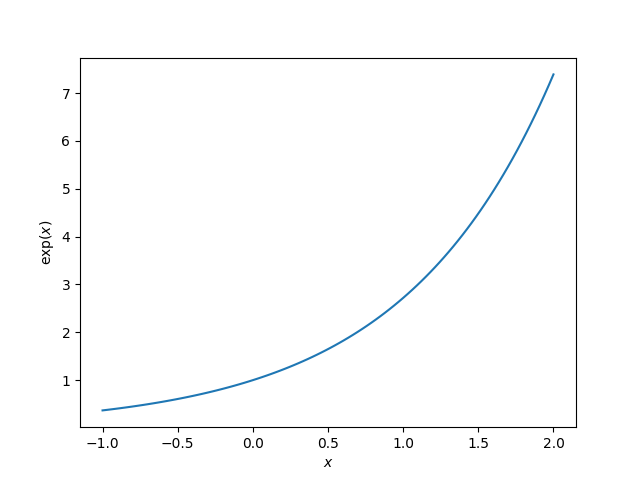
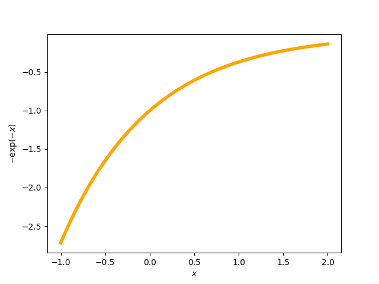

Note
Click here to download the full example code or run this example in your browser via Binder
Choosing the thumbnail figure¶
An example to demonstrate how to choose which figure is displayed as the
thumbnail if the example generates more than one figure. This is done by
specifying the keyword-value pair sphinx_gallery_thumbnail_number = 2 as a
comment somewhere below the docstring in the example file.
- 
- 
# Code source: Óscar Nájera
# License: BSD 3 clause
import numpy as np
import matplotlib.pyplot as plt
def main():
x = np.linspace(-1, 2, 100)
y = np.exp(x)
plt.figure()
plt.plot(x, y)
plt.xlabel('$x$')
plt.ylabel('$\exp(x)$')
# The next line sets the thumbnail for the second figure in the gallery
# (plot with negative exponential in orange)
# sphinx_gallery_thumbnail_number = 2
plt.figure()
plt.plot(x, -np.exp(-x), color='orange', linewidth=4)
plt.xlabel('$x$')
plt.ylabel('$-\exp(-x)$')
plt.show()
if __name__ == '__main__':
main()
Total running time of the script: ( 0 minutes 0.477 seconds)
Estimated memory usage: 8 MB